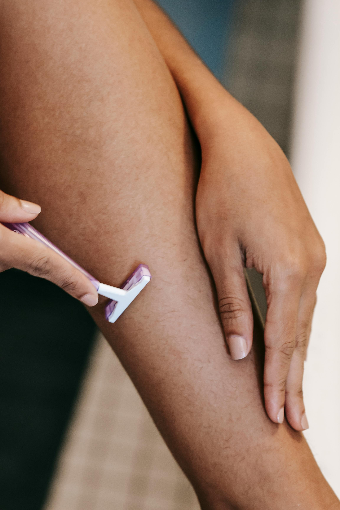

Ensure you get a good night's sleep before your appointment to avoid feeling exhausted during the session.
Eat a healthy meal before your appointment to avoid feeling fatigued.
You may bring snacks or water to keep your energy up
Shave: Shave the area to be tattooed before your appointment but not too close to the time of the appointment to avoid irritation.
Shower: Shower before your appointment to ensure clean skin, which is crucial for the tattooing process.
Moisturize: Keep the skin moisturized, but avoid using heavy creams right before the appointment.
Most importantly communicate with your artist! Talk to me about any concerns you have about getting your tattoo.

AFTER
Leave the skin wrap on for 24 - 48 hours unless you notice irritation or infection. When you decide to remove the skin
it can help doing so in the shower under running water.
Wash the tattoo 1-2 times a day with unscented soap. Lather gently and avoid using a cloth, loofa, or any
form of exfoliant. Make sure to dry gently by patting the area with a towel, do not rub.
Avoid strenuous activity which may irritate your tattoo like yoga, exercise, or anything that may cause excessive sweating or abrasion.
Protect your tattoo from the sun and avoid swimming in natural bodies of water or swimming pools.
Peeling is part of the process, do not pick or scratch at the skin during the healing process. If it gets itchy, you may lightly pat the area for relief.